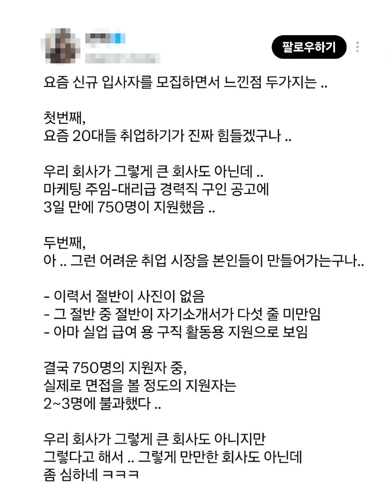

요즘 채용담당자가 느끼는 20대 취업현실
댓글
ㅋㅋㅋㅋ진짜 실업급여용인가? ㅋㅋ
난 실업급여 받을때 십십씹 상향지원하긴함 ㅋ 합격하면 감사하고갈만한곳
쉴건 쉬어야제
우리 회사도 지금 신입 뽑으려고 공고 올렸는데 지원서 보면 진짜 농담 아니고 절반 이상이 아무런 연관 없는 사람들이 대부분이더라
자동화 설비 직무인데 디자인 전공이라던지, 요식업 전공이라던지 심지어 유아교육 전공도 봤음
복지 달달하노~
와 저거 진짜 맞다 ㅋㅋㅋㅋㅋㅋㅋㅋ
사진 없음 + 자소서 3줄 이거 존나 많음 ㄹㅇㅋㅋㅋㅋㅋㅋㅋ
나 전 회사도 하도 허수로 내는 이력서가 많아 이력서를 도저히 검토할 수가 없어서 별도 양식 안맞추면 아예 안받았었음. 그랬더니 오는 이력서 수가 확 줄었음.
근데 분명 구인 공지에 써놨는데도 막 보내는 애들 많더라. 제대로 읽어보지도 않는 듯
경쟁률 그대로 보지 말고 어느정도 낮춰서 보는게 맞음
실업급여 / 좆밥 / 스스로 올려치는 애들 제외하면 절반이하라고 봐야지
자소서에 자기 인생이 어쩌구 저쩌구 꿈이 어쩌구 적는것보다 경력이 어떻게되고 어떤 직무 했는지가 채용담당자 입장에선 더 중요한터라 쌩신입 뽑기 쉽지않음
논 외로 우리나라 대면 면접시엔
차비 무조건 주도록 법 정했으면 좋겠다
자소서에 사진 없고 5줄 이내인건 나도 여러번 봄 보자마자 장난으로 지원한건가?? 싶더라
요새 애들 직장에 큰 미련이 없는듯.
직장이나 월급은 코인, 주식, 곱버스, 레버리지를 위한 발사대인듯.
자소서는 학교에서 4학년쯤 교양필수로 취업ㅇㅇ 이런 수업들으면서 얼추 감은 잡지않나?
그런거 착실하게 들었을 애들은 저런 회사 안갔지
어차피 진짜 중요한 포지션은 헤드헌팅하지 저렇게 안뽑음
자소서는 15년 전에도 대충 썼음
그래도 걍 면접은 봐보고 괜찮으니 합격해서 다 다닌거임
남자애들은 자소서 굳이 왜 쓰냐고 2~3줄 써서 많이 낸다 거기에 실업급여타려고 쓴 것도 추가된거겠지
경력이 없는데 줄줄이 길게 써봐야 뭐하냐 성장배경 가정환경 이런거 쓰라고? 어차피 길게쓰면 읽지도 않는거 결국엔 그 짧은글로 난 병신이 아닙니다 하는거지
걍 대학교때 뭐 배웠고 앞으로 이런걸 하고싶다 이걸로 충분함
3줄 5줄은 너무 짧지만 어차피 좆소는 자소서 별 의미도 없다 저렇게 20대 싸잡아서 욕하지만 결국 면접온 그 2, 3명 다 뽑아줘도 저 회사 다닐까??
나도 저런 사람 아에 부르지도 않음 ㅋㅋ
괜찮은 회사라는게 진실이라치면 과장이거나 소설임ㅋㅋ
이대남까는 꼬라지보니 30대도 슬슬 영포티 따라가네
애초에 사진이랑 자소설은 왜 필요한 거냐ㅋㅋㅋ
씹좆틀딱들은 조금이라도 더 이쁜여자 뽑아서 박을생각하는게 베이스거든
근데 저거조차 안하는 애들이 100만명 정도 된다는거잖아
대체 얼마나 쌓여있는거냐
격공한다 랄부를 탁 치며 추천을 누른다
우리회사도 이력서 받으면 100개 온다 가정하면
60 - 사진도 없음 또는 셀카, 자기소개 자체가 안써있음, 전혀 구직의 준비가 안되어있는 자소서(복붙, 맞춤법도 다틀림..)
20 - 직무에 전혀 상관없는 자기소개(예를 들면 쉐프를 구하는데, 자기 IT기술 좋다고...) 실업급여용으로 보임
10 - 채용 불가능한 상태의 사람(한국말 잘 못함, 나이대가 안맞음)
그렇게 거르고 걸러서 10개 남으면 정말 면접까지 가는건 3~4개정도일듯...
자소설이 뭐가 중요하냐고하지만 적어도 내가 이 직무를 위해서 무슨 경험과 자세인지는 어필해야하는거 아닌가? 당연히? ㅋㅋㅋ왜 필요하냐고 묻는 사람들은 적어도 인사관련 경험은 없을듯
직무 관련된 경험은 이력서에 적는 거 아니야? 자기소개서에서 직무를 대하는 자세에 대한 어떤 정보를 얻을 수 있어? 최선을 다하겠다 능동적으로 배우겠다 같은 뻔한 소리 말고 차별점이 있어?
그런 뻔한소리조차 안하는 애들 거를 수 있음
모든 직종이 다르다보니 요구하는 경험이 다르겠지만, 나같은 경우에는 여행사를 운영한다. 그럼적어도 이사람이 적었건 AI가 적었건, 이 사람이 경험이 있건없건, 삶의 흔적이 나타난 글을 보면, 내가 찾는 직무에 맞는지 안맞는지 파악하기가 훨씬 쉽지.
예를들면 최근에 뽑게된 직원도 나이도 어리고 관련업종에서 경력도 없어. 심지어 관련 학과도 아니고 자격증이 딱히 있는것도 아니야. 다만 이 친구가 남겨놓은 자기가 이 업무를 해보고싶은 이유, 그것을 위해 준비한 자기만의 시간. 본인이 생각하는 이 시장, 이런것들을 적어두었어. 그걸 설령 AI가 적었더라도, 적어도 그정도의 준비를 한 사람의 소개글은 텅텅빈 이력서보다 이 사람을 더 파악하기가 쉽다는거지.
이력서만 딸랑 있더라면, 경력도 학과도 안맞네 하고 넘겼을수도있지만, 첨부된 자기소개글로 이 친구를 채용했어. 이 친구가 실직무에서 어느정도의 역량을 뽐낼지는 모르지. 하지만 적어도 이 친구의 삶에 새로운 한걸음을 내딛는데 도움이 되지않았나 그리생각해
요즘이 진짜 헬임...요즘 애들 많이 힘들거야
절반이 기본조차 안된 이력서라해도 나머지 절반인 370명정도는 경쟁률이 180:1의 확률로 합격도 아니고 면접임
과대평가를 하나 될대로 되라인가
요즘 3,4학년되면 구직급여같은거 신청하라고 지역 취업센터에서 사람보내서 프로그램 가입시켜서 그럼
그냥 저렇게 이력서 아무것도 안쓰고 지원해도 월 50만원씩 주는데 안하는게 이상하지. 국가제도가 저런 상황을 만드는거임
혹시 아직까지 몰랐던 대학생이나 백수 개붕이들 있으면 gsc구직촉진수당 찾아봐라. 너희 부모님들이 낸 세금으로하는건데 못타먹으면 너만 바보됨
낚시
건질게 1%도 안되면 회사가 문제지 ㅋㅋ
위에서 뭐라안하던?